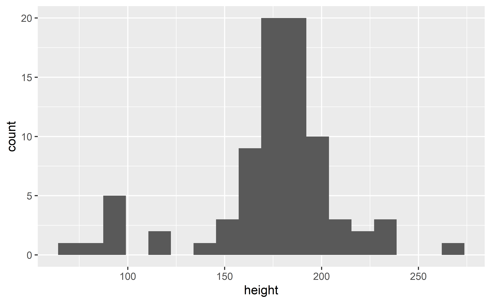
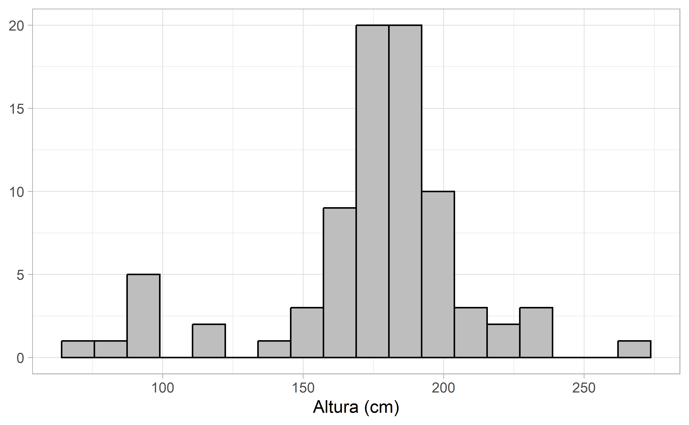
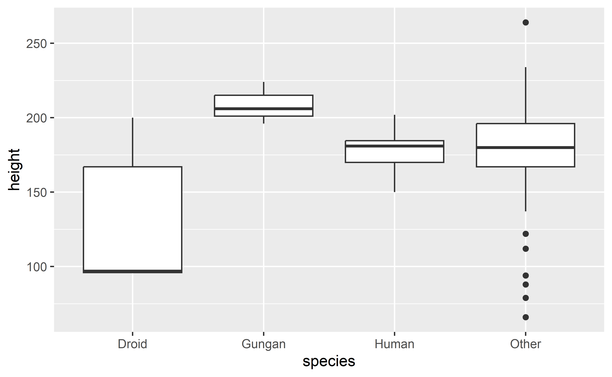
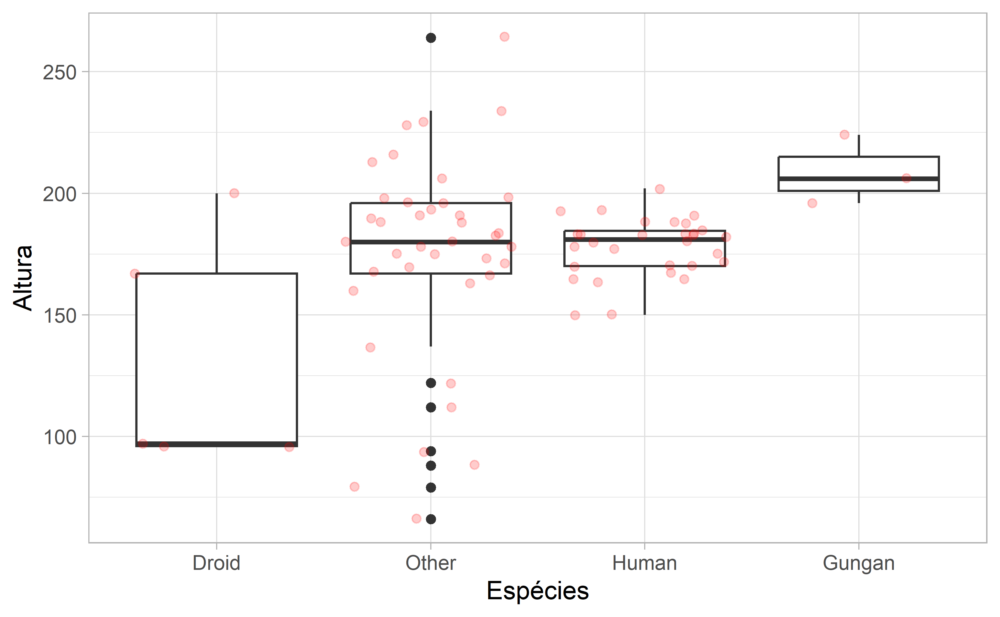
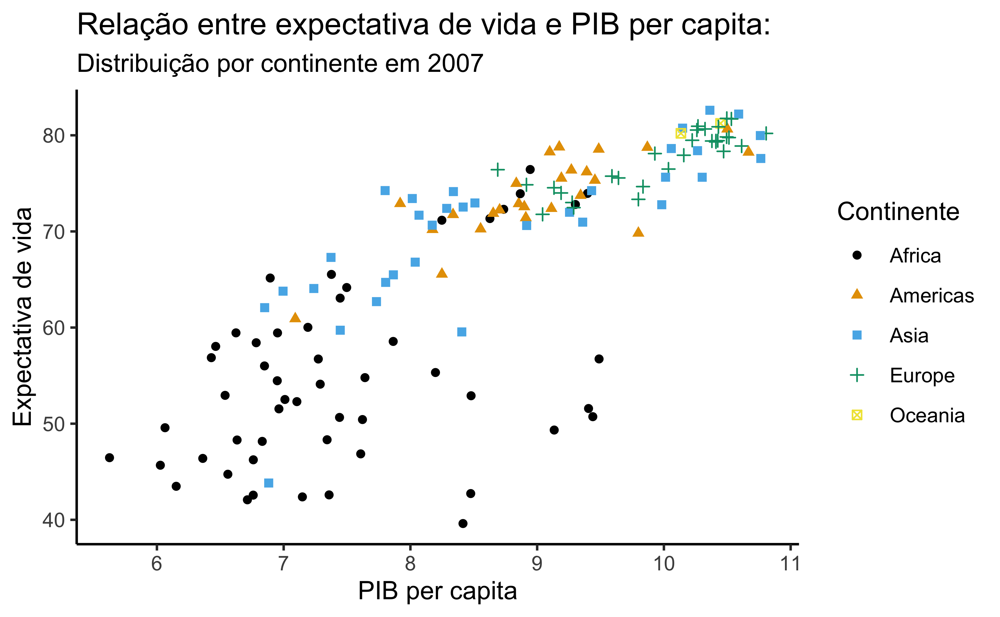
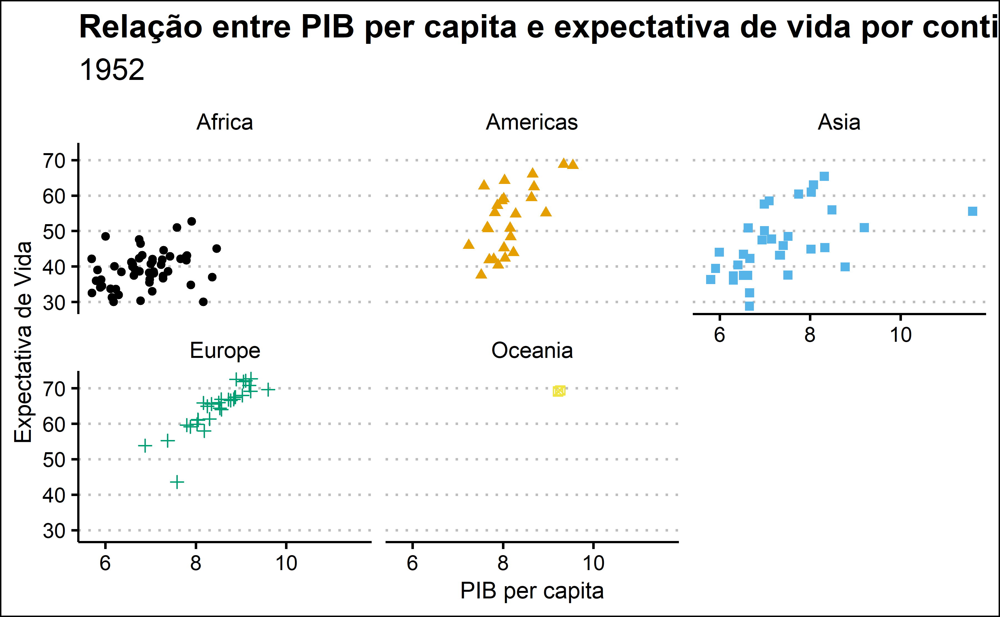

Introdução ao R
Visualização de dados - Respostas

Pacotes necessários
Para fazer estes exercícios, acione os pacotes a seguir:
Bancos de dados
starwars
glimpse(starwars)
#> Rows: 87
#> Columns: 14
#> $ name <chr> "Luke Skywalker", "C-3PO", "R2-D2", "Darth Vader", "Leia…
#> $ height <int> 172, 167, 96, 202, 150, 178, 165, 97, 183, 182, 188, 180…
#> $ mass <dbl> 77.0, 75.0, 32.0, 136.0, 49.0, 120.0, 75.0, 32.0, 84.0, …
#> $ hair_color <chr> "blond", NA, NA, "none", "brown", "brown, grey", "brown"…
#> $ skin_color <chr> "fair", "gold", "white, blue", "white", "light", "light"…
#> $ eye_color <chr> "blue", "yellow", "red", "yellow", "brown", "blue", "blu…
#> $ birth_year <dbl> 19.0, 112.0, 33.0, 41.9, 19.0, 52.0, 47.0, NA, 24.0, 57.…
#> $ sex <chr> "male", "none", "none", "male", "female", "male", "femal…
#> $ gender <chr> "masculine", "masculine", "masculine", "masculine", "fem…
#> $ homeworld <chr> "Tatooine", "Tatooine", "Naboo", "Tatooine", "Alderaan",…
#> $ species <chr> "Human", "Droid", "Droid", "Human", "Human", "Human", "H…
#> $ films <list> <"A New Hope", "The Empire Strikes Back", "Return of th…
#> $ vehicles <list> <"Snowspeeder", "Imperial Speeder Bike">, <>, <>, <>, "…
#> $ starships <list> <"X-wing", "Imperial shuttle">, <>, <>, "TIE Advanced x…gapminder
glimpse(gapminder)
#> Rows: 1,704
#> Columns: 6
#> $ country <fct> "Afghanistan", "Afghanistan", "Afghanistan", "Afghanistan…
#> $ continent <fct> Asia, Asia, Asia, Asia, Asia, Asia, Asia, Asia, Asia, Asi…
#> $ year <int> 1952, 1957, 1962, 1967, 1972, 1977, 1982, 1987, 1992, 199…
#> $ lifeExp <dbl> 28.801, 30.332, 31.997, 34.020, 36.088, 38.438, 39.854, 4…
#> $ pop <int> 8425333, 9240934, 10267083, 11537966, 13079460, 14880372,…
#> $ gdpPercap <dbl> 779.4453, 820.8530, 853.1007, 836.1971, 739.9811, 786.113…
Nota
Do exercício 1 até o exercício 8, você vai utilizar o banco de dados starwars
Exercício 1
Exercício 2
starwars |>
drop_na(sex) |>
ggplot(
aes(fct_infreq(sex), fill = sex)
) +
geom_bar() +
labs(
x = "Sexo",y = "Contagem"
) +
theme_classic() +
theme(
legend.position = "none"
)
Exercício 3
Exercício 4
Exercício 5
starwars |>
ggplot(
aes(height)
) +
geom_histogram(
bins = 18
)
Exercício 6
starwars |>
ggplot(
aes(height)
) +
geom_histogram(
bins = 18, color = "black",
fill = "gray"
) +
labs(
x = "Altura (cm)", y = NULL
) +
theme_light() 
Exercício 7
starwars |>
drop_na(species, height) |>
mutate(
species = fct_lump_n(species, n = 3)
) |>
ggplot(
aes(species, height)
) +
geom_boxplot()
Exercício 8
starwars |>
drop_na(species, height) |>
mutate(
species = fct_lump_n(species, 3)
) |>
ggplot(
aes(fct_reorder(species, height),height)
) +
geom_boxplot() +
geom_jitter(
color = "red", alpha = 0.2
) +
labs(
x = "Espécies", y = "Altura"
) +
theme_light()
Nota
A partir do exercício 9, você vai utilizar o banco de dados gapminder.
Exercício 9
gapminder |>
filter(year == 2007) |>
ggplot(
aes(gdpPercap, lifeExp)
) +
geom_point()
Exercício 10
gapminder |>
filter(year == 2007) |>
ggplot(
aes(log(gdpPercap), lifeExp)
) +
geom_point(aes(
color = continent, shape = continent)
) +
labs(
x = "PIB per capita",
y = "Expectativa de vida",
color = "Continente",
shape = "Continente",
title = "Relação entre expectativa de vida e PIB per capita:",
subtitle = "Distribuição por continente em 2007"
) +
scale_color_colorblind() +
theme_classic()Exercício 11
gapminder |>
filter(year == 1952) |>
ggplot(
aes(log(gdpPercap), lifeExp)
) +
geom_point(aes(
color = continent, shape = continent)
) +
scale_color_colorblind() +
facet_wrap(~ continent)Exercício 12
gapminder |>
filter(year == 1952) |>
ggplot(
aes(log(gdpPercap), lifeExp)
) +
geom_point(
aes(color = continent, shape = continent)
) +
facet_wrap(~ continent) +
labs(
x = "PIB per capita",
y = "Expectativa de Vida",
title = "Relação entre PIB per capita e expectativa de vida por continente",
subtitle = "1952"
) +
scale_color_colorblind() +
theme_clean() +
theme(legend.position = "none")
Exercício 13
Exercício 14
gapminder |>
summarise(
lifeExp = mean(lifeExp),
.by = c(continent, year)
) |>
ggplot(
aes(year, lifeExp, color = continent)
) +
geom_line() +
geom_point() +
labs(
x = "Ano",
y = "Expectativa de vida média",
color = "Continente"
) +
scale_color_colorblind() +
theme_classic()